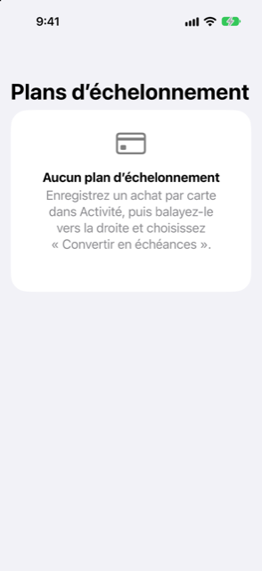

Guide › Planification
Plans d’échelonnement
Étalez un achat par carte sur plusieurs mois et voyez l’effet.
Un plan d’échelonnement est un achat par carte que votre banque vous laisse rembourser mois par mois, conservé dans Damla sous forme de paiements datés plutôt que d’une grosse facture unique. Vous trouvez les plans dans l’onglet Plan sous Plans d’échelonnement, et la prévision impute chaque paiement à sa date d’échéance jusqu’à ce que le plan soit terminé.

Quand l’utiliser
- Votre banque a approuvé la conversion d’un achat par carte en échéances et vous a donné les chiffres.
- Un relevé montre déjà des lignes d’échéances (une ligne « EMI 2 of 6 » et du même genre), et vous voulez que le reste soit compté.
- Vous voulez voir les échéances se terminer d’elles-mêmes et la carte redevenir normale.
- Un achat a été entièrement remboursé ou le rappel de la banque a mis fin au plan.
Étape par étape
- Assurez-vous que l’achat est enregistré comme un achat par carte, soit à la main, soit à partir d’une alerte bancaire.
- Ouvrez l’onglet Activité, trouvez l’achat, balayez-le vers la droite et touchez Convertir en échéances.
- L’écran s’intitule Convertir en échéances, avec l’achat et son montant en haut sous Achat. Remplissez les chiffres Tel que l’indique votre banque : l’Échéance mensuelle, le nombre de mois (de 2 à 60, avec un stepper), des Frais de plan au total (facultatif), et la date de la Première échéance.
- Touchez Convertir.
- Damla affiche le plan dans l’onglet Plan sous Plans d’échelonnement : ce qui reste à payer, une ligne du type « échéance mensuelle × mois mois · N restantes · nom de la carte », et « Coûte X de plus au total » s’il y a des frais.
Pour essayer un plan sans le valider : dans l’onglet Plan, ouvrez Et si, touchez Ajouter un changement, choisissez le type Échéances, et remplissez un nom, l’Échéance mensuelle, les mois, la première date, et le compte d’où il serait payé. Le plan ne devient réel que lorsque vous le convertissez.
Dire à Damla en une phrase
Vous pouvez aussi le taper. Une phrase qui mentionne échéances, EMI ou taksit peut faire apparaître les mêmes questions (« Quelle est l’échéance mensuelle ? », « Combien de mois ? »). Comme un plan est un engagement, Damla affiche d’abord le résultat sous Vérifier et enregistrer : le nom du plan, l’échéance et les mois, la première date, et les frais s’il y en a. Rien n’est écrit avant que vous touchiez Créer le plan, qui se trouve sous la note « Cela crée un engagement, vérifiez-le donc. » Si un achat est déjà en plan, Damla dit « Cet achat est déjà en échéances. »
À partir d’un relevé de carte
Quand un relevé de carte importé comporte des lignes qui indiquent quel paiement elles sont (EMI 2/6, Instalment 3 of 12, taksit 02/06 et du même genre), l’import les liste sous Échéances trouvées. Rien n’est ajouté avant votre confirmation. Les lignes sont rangées sous la catégorie Échéances, et non comme des dépenses courantes, et restent une charge dans la facture de ce relevé. Les paiements encore à venir rejoignent votre plan aux dates d’échéance ultérieures de la carte. À chaque relevé suivant, le numéro suivant apparaît, le plan avance, et aucun paiement n’est compté deux fois. Le plan quitte la prévision de lui-même après le dernier paiement.
Comment l’argent est calculé
Utilisez les chiffres de l’offre de la banque. Le pied du formulaire dit : « Damla ne devine pas les taux d’intérêt. » Les chiffres du plan découlent de ce que vous indiquez :
- Chaque paiement intermédiaire est l’échéance que vous avez indiquée.
- Le dernier paiement est celui qui fait que tous les paiements s’additionnent exactement au total.
- Le total est le premier de ceux-ci qui s’applique : un total que votre banque a indiqué, sinon l’achat plus les frais indiqués, sinon l’échéance multipliée par les mois.
- Le coût supplémentaire du plan est la différence entre ce total et l’achat.
Damla vérifie les chiffres indiqués : la durée doit être d’au moins 1 mois, l’échéance et l’achat supérieurs à zéro, et tous les montants dans une seule devise. Si les chiffres ne laissent rien pour le dernier paiement, Damla refuse et dit pourquoi. Un total indiqué qui diffère beaucoup de l’échéance multipliée par les mois est conservé comme avertissement sur le plan. Un plan a toujours besoin de votre accord avant d’être écrit, pour que vous puissiez y vérifier les chiffres.
Bon à savoir
- L’achat d’origine reste dans vos livres comme la dépense qu’il était, le jour où il a eu lieu. Le plan ajoute chaque paiement à sa date d’échéance jusqu’à sa fin. Les paiements d’échelonnement sont exclus de l’estimation du mois typique d’une carte, de sorte qu’ils ne sont jamais comptés deux fois.
- Chaque paiement arrive dans la prévision comme son propre paiement daté et s’arrête de lui-même après le dernier. Un plan tiré d’un relevé suit les propres dates d’échéance de relevé ultérieures de la carte ; un plan que vous créez vous-même court mensuellement à partir de la date de Première échéance que vous avez donnée.
- Balayez la ligne du plan et touchez Annuler le plan quand la banque y met fin ou le rappelle, par exemple quand l’achat a été entièrement remboursé. Les paiements après ce jour ne sont plus comptés, et la ligne affiche Annulé au lieu de ce qui restait.
- Un plan fait à partir d’un relevé suit la numérotation propre de la banque, de sorte qu’il reste en phase même si vous ne l’avez jamais saisi à la main.
- Ces chiffres décrivent un calendrier de paiement que la banque a proposé. Prendre ou non le plan, et ce qu’il vous coûte, est votre décision, pas un conseil.
À voir aussi
Quelque chose n’est pas clair ou manque ? Écrivez à support@raveniq.ai en indiquant la page.